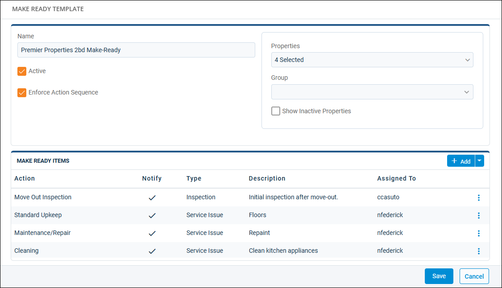
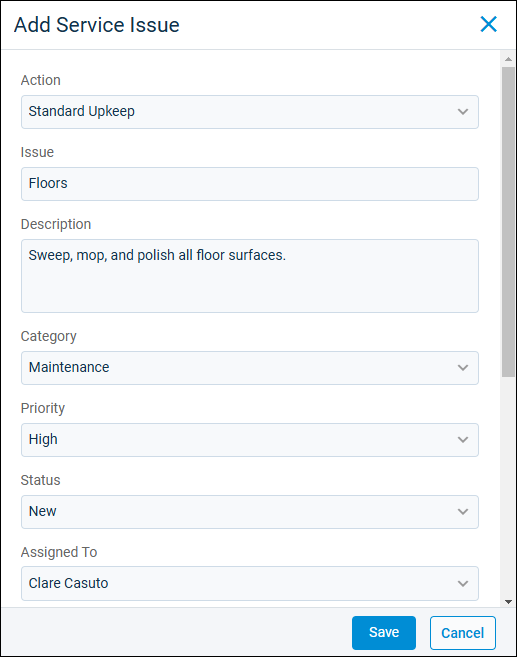
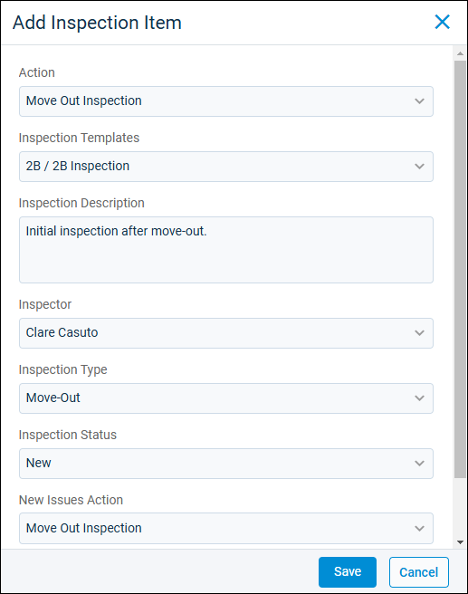
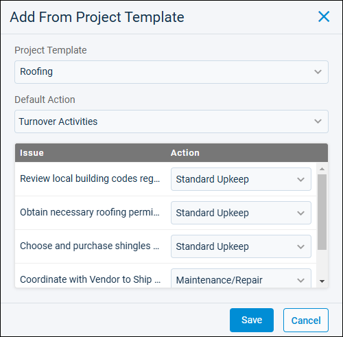

Source: https://rmxhelp.rentmanager.com/Topics/Express/KB/Make-Ready-Template-Add.htm
Add a Make-Ready Template
When you need to prepare units for occupancy, use make-ready templates to quickly create all of the issues, inspections, and other Rent Manager items you need. Templates are made available on a property-by-property basis, but you can customize the specificity of your templates to meet needs at a property-wide, unit-type, or individual-unit level.
More Information
Before you can create a make-ready template, you must add make-ready actions. The work represented by the issues inspections in your template must align with a make-ready action on your make-ready board. For more information, refer to Make-Ready Actions (Page).
Related Privileges
| Group | Privilege | Column |
|---|---|---|
| Properties/Units | Make ready templates | Add, View |
For more information, refer to Control User Access.
Step 1: Set Up a Make-Ready Template
To set up the details of a make-ready template, do the following:
-
Go to
 arrow_forward Services arrow_forward Make Ready arrow_forward Make Ready Templates.
arrow_forward Services arrow_forward Make Ready arrow_forward Make Ready Templates.
The Make Ready Templates page displays. -
Click
 Add.
Add.
-
Enter a Name, such as the property and unit type the template can be used for.
-
Active is selected by default. If you don't want the template to be available immediately after you create it, you can optionally deselect Active so that the template can be edited but not selected for a make-ready process.
-
To always require that issues and inspections be completed in specific order, check Enforce Action Sequence. Order is based on the make-ready action assigned to each issue and inspection. When sequence is enforced, actions must completed in the order they display across the top of the make-ready board.
-
Select the properties where this template can be used. Choose from individual properties or choose property group.
Step 2: Add Make-Ready Items
To add the items required to complete the make-ready process, you can create new issues and inspections from the Make Ready Template pop-up, or you can add existing actions from a project template.
Add Issues to a Make-Ready Template
Related Privileges
| Group | Privilege | Column |
|---|---|---|
| Properties/Units | Make ready templates | Add, View, Edit |
For more information, refer to Control User Access.
Issues in Rent Manager help you and your team track and complete all the most important work you handle each day. When you start a make-ready process from this template, all issues in the template are created and added to your list of issues as well asadded to the make-ready board to track progress.
To add issues to a make-ready template, do the following:
-
On the Make Ready Items tile, next to the
 Add button, click arrow_forward Add Service Issue.
Add button, click arrow_forward Add Service Issue.
-
Enter the following information:
Field Description Action
The make-ready action this issue completes. For example, if this is an issue for cleaning floors after move-out, it might be assigned to the action Cleaning. Actions display as columns across the top of the make-ready board.
Issue
A short name or description of the work represented by the issue.
Description
A more detailed explanation of the work represented by the issue.
Category
The service issue category to which the issue belongs. For more information, refer to Issue Categories (Page).
Priority
How soon the issue should be completed.
Status
The current progress of the issue when it is first created.
Assigned To
The user assigned to complete the issue.
More Information
If a user is set up as the default assignee for service issues in system preferences or on the property's details page, their name automatically populates in this field. For more information, refer to Service Issue General Options (System Preferences).
Vendor
The vendor who completes the work or provides materials for the issue.
Due Date Offset
The number of days from the start date of the make-ready process until the issue is due. For example, if the make-ready process starts on 10/16, a Due Date Offset of 3 sets the issue due date to 10/19.
Scheduled Date Offset
The number of days from the start date of the make-ready process until work on the issue is scheduled to begin. For example, if the make-ready process starts on 10/16, a Scheduled Date Offset of 1 means that work on the issue needs to begin on 10/17.
Notify when ready
Notifies the Assigned To user by email when their issues are available for work.
-
If multiple tasks are required to complete a single issue, in the Checklist section, you can create new checklist items or add checklist items from a template. You can add as many checklist items as needed. For more information, refer to Add a Checklist Item to an Issue.
-
Click Save.
The issue is added to the template. You can repeat these steps to add as many issues as needed to complete the make-ready process.
Add Inspections to a Make-Ready Template
Rent Manager inspections streamline and standardize the inspections process. When you start a make-ready process from this template, all inspections in the template are created and added to your list of inspectionsas well as added to the make-ready board to track progress.
To add inspections to a make-ready template, do the following:
-
On the Make Ready Items tile, next to the
Add button, click arrow_forward Add Inspection Item.
-
Enter the following information:
Field Description Action
The make-ready action this inspection completes. For example, if this is an initial inspection of the unit right after a tenant moves out, it might be assigned to the action Move-Out Review. Actions display as columns across the top of the make-ready board.
Inspection Templates
The checklist of areas in the unit to review as part of the inspection.
You can create inspection templates based on unit types. If the make-ready template is for a single unit type, you can select the unit type's inspection template. If you use the make-ready template for multiple unit types, you can select <Unit Default> to always assign the default inspection template set on the unit's details page.
Inspection Description
An explanation of the work expected during the inspection.
Inspector
The user responsible for completing the inspection. If a user is selected as the default assignee for inspections on the property's details page, their name automatically populates in this field.
Inspection Type
The category of the inspection.
Inspection Status
The current progress of the inspection when it is first created.
New Issues Action
The make-ready action applied by default to any new issues created as part of the inspection. If you want new issues to be created from this inspection but not added to the make-ready board, select <Exclude from Make Ready>.
Scheduled Date Offset
The number of days from the start date of the make-ready process until work on the inspection is scheduled to begin. For example, if the make-ready process starts on 10/16, a Scheduled Date Offset of 1 means that work on the inspection needs to begin on 10/17.
Notify when ready
Notifies the Assigned To user by email when their inspections are available for work.
-
Click Save.
The inspection is added to the template. You can repeat these steps to add as many inspections as needed to complete the make-ready process.
Add Actions from a Project Template
You can add issues you already created for a project to the template. To add actions from a project template, do the following:
-
On the Make Ready Items tile, next to the
Add button, click arrow_forward Add From Project Template.
-
Select the Project Template you want to copy issues from.
-
Select the Default Action assigned to issues created from this template.
-
Optionally, change the Action associated with each Issue.
-
Click Save.
All issues from this project template are added to the make-ready template. You can remove and edit issues as needed by clicking next to each issue in Make Ready Items.
next to each issue in Make Ready Items.
Step 3: Save the Make-Ready Template
After all information is entered and issues and inspections are added, click Save. The template can now be chosen when you create a new make-ready process from the make-ready board.